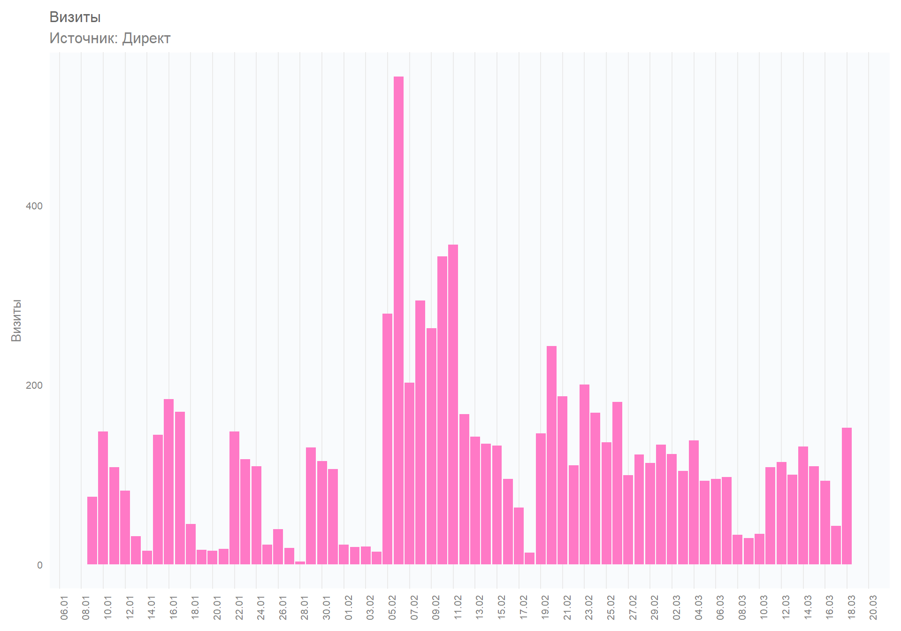
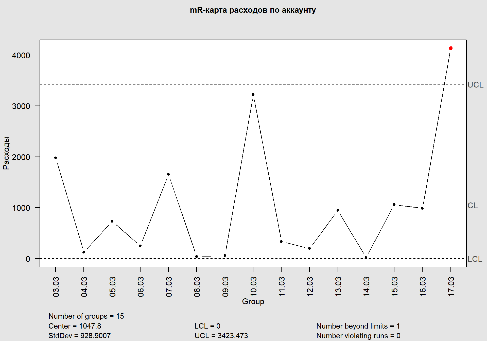
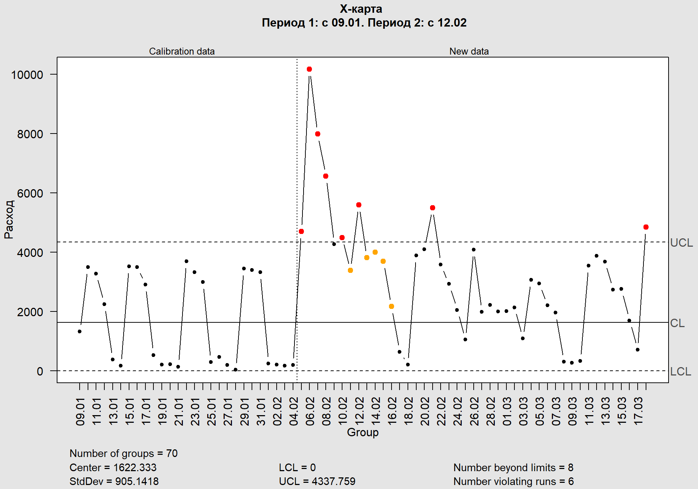

Применяем ГОСТ стандарт РФ «Контрольные карты Шухарта» для оптимизация рекламных кампаний и других источников трафика
Вводная. Трагическая. На что мы смотрим в Метрике
Запустив рекламные кампании неизбежно наступает момент, когда нужно идти в системы аналитики и искать истину.
Создав отчет система аналитики предлагает нам какой-то такой график.
Прекрасный график показывает нам нежно розовые столбики в динамике. Но, очень быстро, на ум приходит вопрос: «И что?». А и вправду? Что нам делать с этой информацией. Эта динамика хороша или плоха. Мне стоит переживать что столбик от 15.02. выше чем от 14.02 или может даже от 10.01!? Какие решения я должен принять изучив этот график? Даже если я добавлю различные срезы по типу устройства, регионам, таргетам ситуация не станет яснее.
Тогда, может таблица в помощь.
Таблица содержит данные сгруппированы по аккаунту. Некоторые столбцы содержат сумму, а некоторые средние значения, например CTR.
И что? Стало яснее? Система по привлечению трафика работает? Даже подсветив ячейки ясности не принесло.
На основании этих данных многие специалисты, бизнесмены и другие коллеги по опасному бизнесу принимают судьбоносные решения.
Это напоминает бросок кирпича. После тщательной подготовки я бросаю свой кирпичик. Он весело, по параболе, достигает своего апекса. Радостно. Показатели на высоте. И, неизбежно (про неизбежное будет чуть ниже), устремляется вниз. Становится тревожно. Вспотел. Но может так должно быть. Так устроена физика и, по сути, переживать тут не надо.
Чтобы понять когда нужно принимать решения применим силу контрольных карт Шухарта.
Кто этот такой ваше «контрольный карта Шухарта»!?
Контрольные карты Шухарта (метод шести сигм) — статистический метод, который позволяет оптимизировать / усовершенствовать процессы в компании. В основе метода лежит предположение, что любые динамически меняющиеся во времени показатели могут быть разделены на 2 группы: системные и частные.
Предполагается, что если значение показателя трактуется как неудовлетворительное, то необходимо определиться с корректными методами его исправления, принимая во внимание тот факт, что системные проблемы должны корректироваться системными методами, а частные — частными.
Кроме того, метод используется для оценки повышения / снижения качества управления, предлагая конкретные индикативные показатели, отражающие нарастающую или снижающуюся вариативность процесса (вариативность в концепции рассматривается как главный «враг» эффективности).
Главная задача научиться различать состояния, в которых находится система, а затем решать, что и кому надо с ней делать (или не делать). ККШ — это и есть диагностический инструмент для ответа на вопрос: надо или не надо вмешиваться в систему, и если надо, то кому?
Контрольные карты Шухарта приняты и введены в действие Постановлением Госстандарта России от 15 апреля 1999 г. N 127
Какие задачи решают ККШ
- Главная задача — оптимизация источников трафика по интересующим нас данным. После внесенных изменений в рекламную кампанию (РК) вы практически сразу увидите результат.
- Контроль подрядчиков. С помощью контрольных карт вы увидите результаты работ и поймёте, были ли вообще выполнены какие-либо работы.
- Аудит рекламных систем.
Сфера применения
Контрольные карты широко применяются в сферах производства и в меньшей степени в сфере услуг. В нашем случае мы применяем карты для улучшения показателей в рекламных кампаниях. Вообще, ККШ можно применить для улучшения любых показателей в бизнесе, которые накладываются на временной ряд.
В данном кейсе я покажу, как с помощью кода на R можно построить различные типы ККШ на примере действующей рекламной кампании. Тип рекламной кампании, собственно, как и источник не имеют значения, так как анализировать можно практически любые параметры из любых источников, растянутых на временном интервале.
Как работать с картами
Возможно четыре состояния, в которых находится любой производственный процесс.
- Идеальное состояние – процесс управляем и 100% продукции соответствует допускам.
- Пороговое состояние – процесс управляем, но не 100% продукции соответствует допускам.
- На грани хаоса – процесс неуправляем, хотя вся выпускаемая продукция соответствует допускам.
- Состояние хаоса – процесс неуправляем, и периодически производится брак.
Энтропия постоянно воздействует на все процессы, вызывая ухудшение качества, разрушение, износ и разрывы, аварии и отказы. Т.е. если не управлять системами привлечения трафика (seo, контекст, smm) они в любом случаи затухнут, просто потому что так работают законы вселенной.
Критерии роста системы
Шухарт и Деминг выделили два критерия которые должны указывать на то, что кампания активно растет:
- среднеарифметическая растет или снижается в зависимости от параметра;
- границы сигмы становятся все более узкими. Сокращая вариативность параметра мы берем управление под контроль.
Критерии ухудшения системы
- средняя арифметическая снижается или растет, если речь идет о негативном параметре;
- на протяжении шести и более дней (контрольных интервалов)значения скачут с нарастающей волатильностью;
- если несколько дней подряд наблюдается выход за пределы контрольных границ;
- если шесть и более дней наблюдается негативная тенденция в значениях (неважно, сверху или снизу). Т.е. значения находятся над или под средней линией.
Правила для обнаружения «вышедших из-под контроля» или неслучайных условий:
Примеры
Рассмотрим несколько примеров как выглядят различные типы карт в различных срезах.
Но сначала давайте попробуем сделать какие-то выводы по графикам, которые вы видите в Метрике или в Директе.
Для примера возьмем анализ расходов в разрезе кампаний. Построим столбчатый график с накоплением и график с точками и линиями.
Да, на графике видно, что что-то происходит. Какие-то РК включаются, какие-то выключаются, но стоит ли переживать из-за этого. Что за пик случился 05.02. и что произошло дальше.
XmR-карты
Карты индивидуальных значений и размахов (\(XmR-карты\)) применяются, когда нет возможности сгруппировать данные. Данный тип карт менее точен, чем карты средних значений, однако они полезны при старте рекламных кампаний.
Как видно из названия карт применяются два их вида:
- карта индивидуальных значений (\(X-карта\)). Строится карта в декартовой системе координат, где по оси абсцисс расположены даты, а на оси ординат значения исследуемой метрики.
- карта размахов. Размах — это разность между наибольшим и наименьшим значениями и обозначается символом \(mR\). Размах практически не отражает «срединных» значений, поэтому он неэффективен для описания больших массивов данных и используется для описания множеств, число элементов которых не превосходит 15.
Рассмотрим mR-карту по всему аккаунту за последние 15 дней.

Сразу видим что 17.03. наблюдается перерасход средств по аккаунту. Были внесены какие-то действия, которые привели к выходу за границы системых значений. Действительно, в этот день были выставлены новые значения по недельному расходу.
Рассмотрим \(X-карту\) индивидуальных значений за весь анализируемый период.

На графике за весь период видим заметны выходы за границы системы в
Пересобирем график для большей информативности.
Разумеется мы можем выбрать интересующую нас группу и проверить интересующую нас метрику. Например, на графике ниже видны данные по расходам в разрезе трех объявлений выбранной мною группы.
Допустим меня интересует объявление, которое отображено зеленой линией на графике. Проверим границы по бюджетам, кликам.